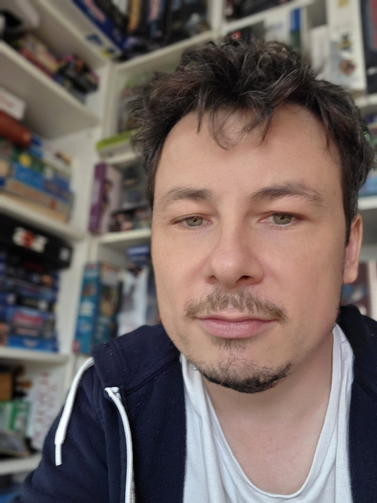
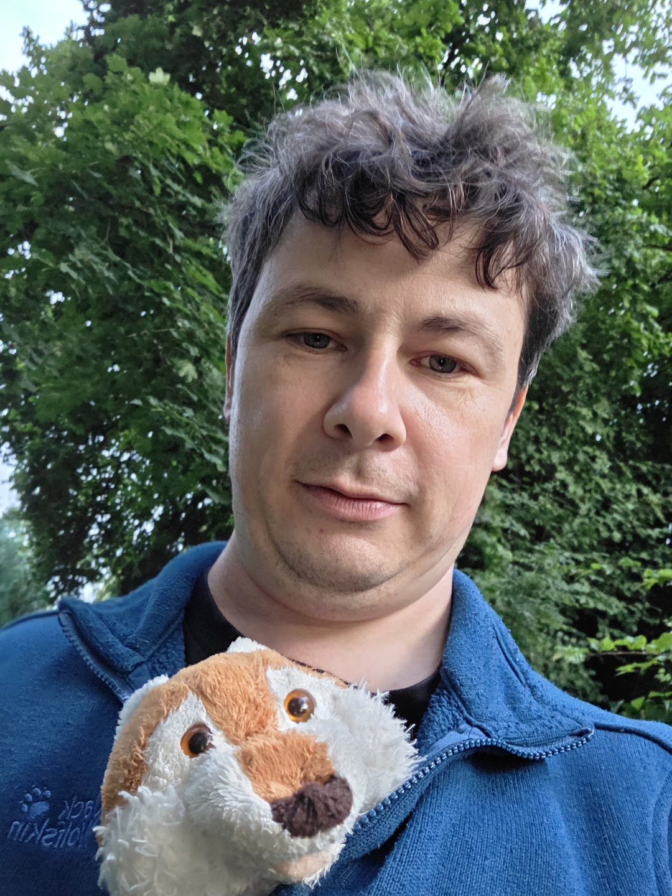
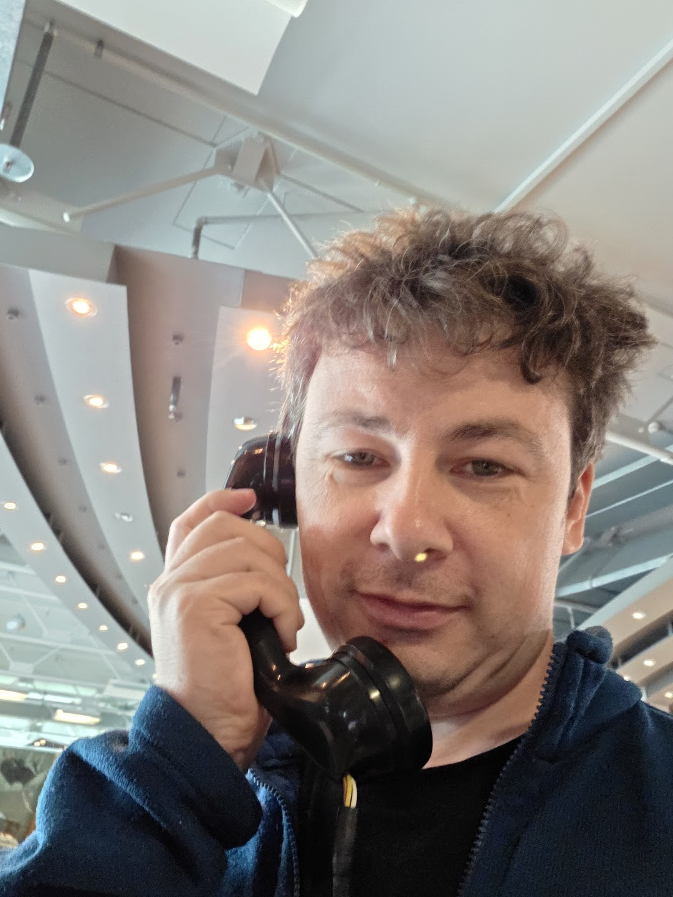
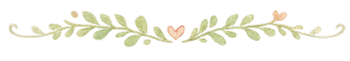
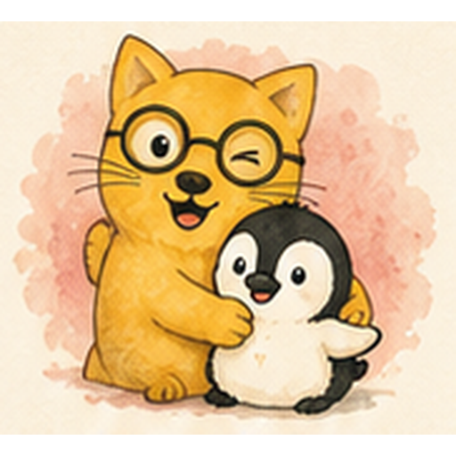

Über mich –
warum Waldkätzchen entstanden ist.
Ich bin Torsten – Heilpädagoge, IT-ler, Familienmensch. Und jemand, der gelernt hat: Verstehen verändert mehr als schnelle Lösungen.
Waldkätzchen ist aus meinem eigenen Weg entstanden – aus Erfahrungen mit Krisen, mit Überforderung, aber vor allem aus dem Wunsch, Kinder, Eltern und Familien wirklich zu begleiten.
Hier findest du meine Geschichte, meine Überzeugungen und das, was mir wichtig ist – beruflich und im Leben. ♡



Mein Weg – wie Waldkätzchen gewachsen ist
Ich komme aus zwei Welten: aus der Heilpädagogik – mit dem Blick für den Menschen und das Miteinander – und aus vielen Jahren in der IT. Zwei scheinbar verschiedene Bereiche, die mir heute eine besondere Stärke geben: analytisch denken und zugleich menschlich fühlen.
Dann kam das, was viele Familien kennen: persönliche Krisen, Unsicherheit, Wutausbrüche, Rückzug, Eskalationen. Ich habe miterlebt, wie schnell der Alltag kippen kann – und wie leicht man als Familie das Gefühl bekommt, allein damit zu sein.
Ich habe gelernt: Verhalten ist nie „einfach nur schwierig“. Es hat Gründe. Es will verstanden werden. Und oft braucht es nicht mehr Druck – sondern mehr Sicherheit, Verbindung und verständnisvolle Begleitung.
Aus all dem ist Waldkätzchen entstanden: ein Ort für Kinder, Eltern und Familien, an dem ich mit euch hinschaue, verstehe und verändere – mit Herz, Fachwissen und ganz viel Alltagsnähe.
Was mich prägt

Wer ich bin – was ich mitbringe



Mein Weg zu den Waldkätzchen
Ich bin Torsten. Papa von drei wunderbaren Kindern. Partner. Heilpädagoge. Informatiker. Und vor allem: ein Mensch, der selbst lange lernen durfte, hinzusehen, zu fühlen und wirklich zuzuhören.
Mein ältestes Kind ist hochbegabt, mein Sohn im Autismus-Spektrum. Beide haben mir gezeigt, wie komplex, wie intensiv – aber auch wie wunderbar das Leben als Familie sein kann. Und wie oft wir als Eltern an unsere Grenzen stoßen.
Ich kenne die Nächte voller Sorgen. Die Tage voller Wut, Tränen und Zweifel. Die Momente, in denen nichts mehr geht – und die Suche nach Antworten, die wirklich helfen.
Meine eigene Kindheit war nicht immer leicht. Ich habe früh gelernt, stark zu sein. Funktionieren. Durchhalten. Gefühle? Nicht so wichtig. Heute weiß ich: Genau das hat mich geprägt – und genau das möchte ich für meine Kinder anders machen.
Ich habe Heilpädagogik studiert, weil ich verstehen wollte. Verstehen, was hinter Verhalten steckt. Verstehen, wie Entwicklung wirklich gelingt. Und weil ich glaube: Jedes Kind verdient es, gesehen und verstanden zu werden.
Vor meiner pädagogischen Arbeit war ich viele Jahre in der IT und in der Teamleitung unterwegs. Ich weiß, wie Systeme funktionieren. Wie wichtig Struktur ist. Und wie schnell Menschen darin vergessen werden.
Die Waldkätzchen sind aus all dem entstanden:
Aus meinem Leben. Aus meiner Arbeit. Aus meinem Herzen. ♡

Warum das hier anders ist


Mein USP liegt in der Verbindung aus professioneller Fachlichkeit, persönlicher Erfahrung, systemischem Denken, Naturverbundenheit und einer Sprache, die Familien wirklich erreicht. Ich begleite euch so, wie ich es mir selbst gewünscht hätte: echt, verständlich, wertschätzend – und mit einem klaren Blick auf das, was wirklich wichtig ist. ♡


Lass uns hinschauen – und Wege finden, die zu euch passen.
Ich freue mich darauf, euch und eure Geschichte kennenzulernen.